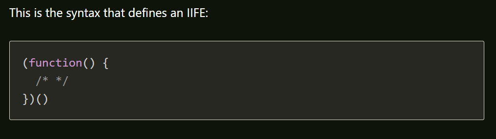

call() Method
- It can be used to invoke (call) a method with an owner object as an argument (parameter).
apply() Method
- The apply() method is similar to the call() method.
Immediately Invoked function expressions (IIFE or 'iffy')
- way to execute functions immediately, as soon as they are created. IIFEs are very useful because they don't pollute the global object, and they are a simple way to isolate variables declarations 
Promises
- A promise represents the future result of an asynchronous operation ,promises don't do anything that can't already be achieved using callbacks, but they help simplify the process, and avoid the convoluted code that can result from using multiple callbacks.
AJAX
W3Schools says that AJAX is a developer's dream for these reasons:
- It can update a web page without reloading the page
- Request data from a server - after the page has loaded
- Receive data from a server - after the page has loaded
- Send data to a server - in the background
AJAX stands for Aynchronous JavaScript And XML
There are 7 steps to on how AJAX works:
- An event occurs in a web page (the page is loaded, a button is clicked)
- An XMLHttpRequest object is created by JavaScript
- The XMLHttpRequest object sends a request to a web server
- The server processes the request
- The server sends a response back to the web page
- The response is read by JavaScript
- Proper action (like page update) is performed by JavaScript